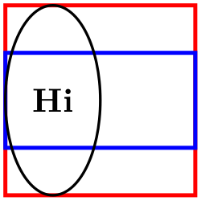
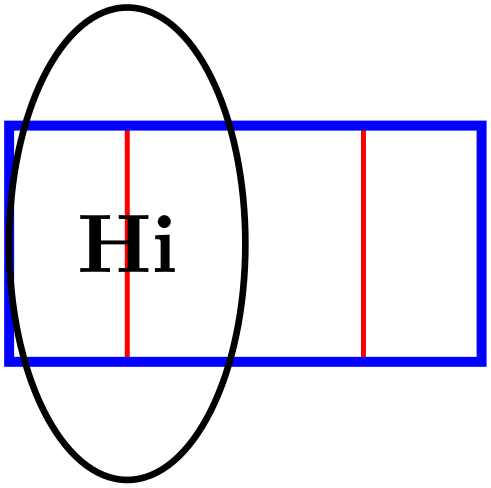
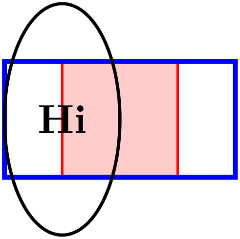

The TikZ and PGF Packages
Manual for version 3.1.9a
Libraries
77 Views Library
TikZ Library views ¶
\usetikzlibrary{views} %
LaTeX
and plain
TeX
\usetikzlibrary[views] % ConTeXt
This library is used for creating views, which are
transformations of a part of a picture so that this part
“fits” into a “viewbox”. Mostly, views are
useful in conjunction with animations.
A view is essentially a “window” through which you see a graphic. To establish a view, you specify a rectangle – which is the window – and another rectangle surrounding the to-be-viewed graphic. The graphic will then be rescaled and shifted in such a way that the to-be-viewed rectangle matches the view’s rectangle as well as possible. Note that establishing a view causes a canvas transformation to be installed, not a coordinate transformation.
View boxes are only seldom needed in normal graphics; you may prefer to use coordinate transformations or the spy library. Their main application is with animations since you can animate the to-be-viewed rectangle. This makes it easy to create animations in which you zoom in, zoom out, and pan a graphic.
/tikz/meet=⟨to-be-viewed corner⟩ rectangle ⟨to-be-viewed corner⟩ at ⟨window corner⟩ rectangle ⟨window corner⟩(no default) ¶
Use this key with a scope to establish a view for the scope. In the argument to the meet key, both rectangle texts are optional. Also, everything following at is optional; when it is missing, the ⟨window corner⟩s are assumed to be the same as the ⟨to-be-viewed corner⟩s. The latter are two corners of a rectangle that should be transformed in such a way that it fits inside the rectangle described by the two window corners.
More precisely, at the beginning of the scope a canvas transformation is installed that scales and translates the canvas is such a way that
1. the center of the to-be-viewed rectangle lies at the center of the window rectangle and
2. the to-be-viewed rectangle has maximum size that it still fits inside the window rectangle.


As mentioned earlier, the main use of views is in conjunction with animations. In order to animate a view, you specify the scope containing the meet command as the target object and then animate its :view attribute:
\tikz [animate =
{
my scope:view = {
begin
on = { click, of
next = here },
0s = "{(0.5,0.5) (2.5,1.5)}",
2s = "{(0.5,0) (1.5,2)}", forever,
}}] {
\draw [red, fill=red!20, very thick, name=here]
(0,0) rectangle
(20mm,20mm);
\begin{scope}[name =
my scope,
meet =
{(0.5,0.5) (2.5,1.5) at
(0,0) (2,2)}]
\draw [blue, very thick] (5mm,5mm) rectangle
(25mm,15mm);
\draw [thick] (1,1) circle
[x radius=5mm, y radius=10mm] node
{Hi};
\end{scope} }
You can, of course, also specify the animation using the animate myself: key when you specify the animation inside the scope:

\usetikzlibrary {animations,views}
\tikz [animate =
{
my scope:view = {
}}] {
\draw [red, fill=red!20, very thick, name=here]
(0,0) rectangle
(20mm,20mm);
\begin{scope}[animate =
{ myself: = { :view = {
begin
on = { click, of
= here },
0s
= "{(0.5,0.5) (2.5,1.5)}",
2s
= "{(0.5,0) (1.5,2)}", forever }}},
slice =
{(0.5,0.5) (2.5,1.5) at
(0,0) (2,2)}]
\draw [blue, very thick] (5mm,5mm) rectangle
(25mm,15mm);
\draw [thick] (1,1) circle
[x radius=5mm, y radius=10mm] node
{Hi};
\end{scope} }
/tikz/view(no value) ¶
This is an alias for /tikz/meet.
/tikz/slice=⟨to-be-viewed corner⟩ rectangle ⟨to-be-viewed corner⟩ at ⟨window corner⟩ rectangle ⟨window corner⟩(no default) ¶
This key works exactly like meet, only the second rule is changed:
\(2'\). the to-be-viewed rectangle has minimal size that it encompasses all of the window rectangle.